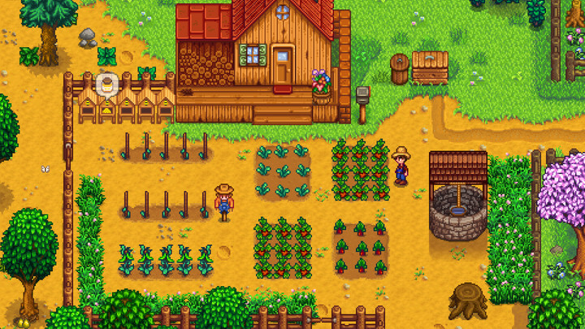
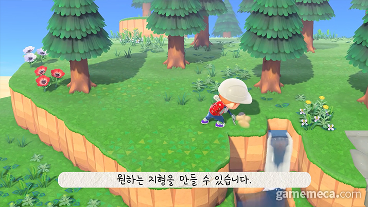
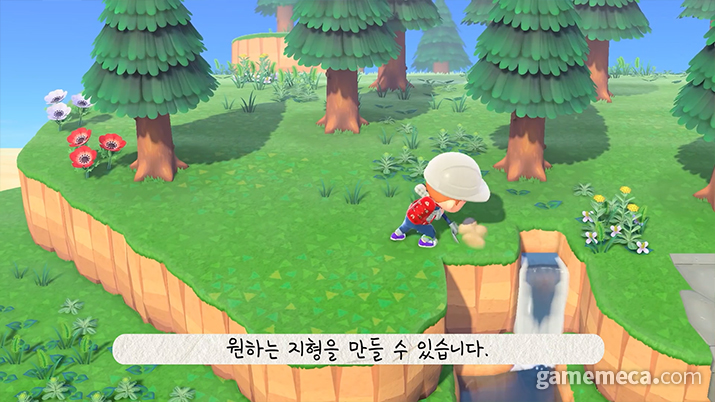
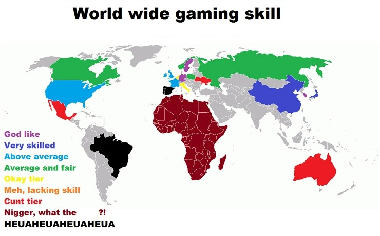

게임의 민족 대한민국
개요
게임의 민족 대한민국의 빡겜의 민족 밈은 원래 우리끼리 빡겜하고있었으나 그 사실이 인터넷의 발전으로 다른나라 사람들에게 까지 알려졌기에 생겨났다.
경쟁게임이 아닌 힐링귀농겜 스타듀벨리 K-패치한번 당하면 극한의 효율을 추구하는 팩트리오가 되버리고 또다른 힐링게임 동물의 숲에서도 한국인은 일단 막노동을해서 돈부터 모와 집부터 산다는 말도있다.


 


한국인이 게임을 잘하게된 계기
유치원때는 쥬니어네이 초등학생때부터 pc방을통해 훈련한다.
pc방이 까페만큼이나 있어서 유소년들에의 유스팜이 곳곳에 산하여있고 지속적인 훈련을 통해 다른나라보다 더 많은 인재가 나왔기때문이다.
'적으로부터 우리부모님을 지키기위해.. 그리고 아군에도 부모님을 노리는 녀석이 있기때문에...자신의 가정을 지키기위해 목숨을걸고 게임에임하였고 이를통해 실력이 상승하여 잘할수있게되는 계기가 된것 같다.

국내 전설의 8대 게이머
1.월드 오브 워크래프트의 망령군마 희득 사건
월드 오브 워크래프트에 신규패치가 진행되면서 "무쇠결속 망령군마의 마구" 라는 것이 추가가 되면됨
해당 탈 것은 시간 왜곡의 훈장 5,000로 획득이 가능했는데 일반적인 플레이 타임을 보고 생각해 봤을 때 엄청난 시간을 쏟아부어야만 얻을 수 있는 보상이었다. 한 유저가 망령군마를 획득하는데 8개월 정도의 시간이 필요한 것이 의도된 것이냐며 개발사에 문의를 했는데 개발진은 "의도된 것이 맞으며 해당 탈것을 얻기 위해서는 장기적 노력이 필요하다" 라는 답변을 놓게 되면서 망령군마를 얻고 싶었던 유저들은 망자실하였다. 대충 계산했을때 하루에 5회씩 돈다 쳤을 때 평균 180개로하고 1주일이면 1080개 이행위를 총 5회 반복해야하는데 해당 이벤트가 49일에 한번씩 돌아오니까 대략 190일 정도를 노력해야 얻을 수 있다. 커뮤니티는 망령군마 이야기로 떠들석 했지만 어쩔수없지라는 생각으로 단념하는 분위기가 생성되었다. 그러고 이틀이지나 커뮤니티에 글이 하나 올라오게 되었다.
바로 망령군마를 샀다는 인증글이었다.